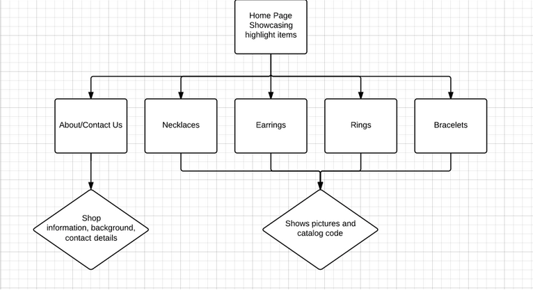

3.
Description Look and Feel
The overall look and feel of the website should be very simple. In the respect that the main focus area should go on the jewellery, due to the fact that the jewelry is the main purpose. The categories still remain in sync with the flowchart, a section for each category. There is 5 sections in total: About/Contact Us, Necklaces, Earrings, Rings and Bracelets. It’s purpose it like a catalogue, which shows the catalog code. The About us section, is what it means, the crucial information on the background, as well as contact details.
Wireframing
Through research on many various jewelry web pages as well as client integration of ideals that relate most to the company, the wireframe is in complete sync with the webpages we have created. We as a group believe that, the website, including all of the webpages we have created; should have design that is simple, yet elegant. I have asked my client on the permission to, create the website on a simple style, my client agrees with the idea, of simplicity yet elegance. My client also said that the main selling point is the jewellery, and the website is the main tool to convey the jewellery to the client, so the jewellery should be emphasized, and the website should be a tool that just blends in, it should be able to carry out the photos attached to the website.